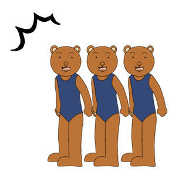

当 当 当！
我们的亲爱的、可爱的、又有点淘气的小喵Julia同学20岁啦！
作为学长、朋友以及男朋友，我们虽然认识的时间并不长*，但是这段时间内我算是充分了解了你的脾气和习性……
*咦其实个人觉得还是挺长的嘛嘛，基本上呢就是：
总结就是小懒喵一只嘛
不过你肯定知道我这是在先抑后扬啦

你说对吧，兔美酱？
你说过，到了20岁就不再是Teenager了，言毕有种沧桑的感觉。
当时我在想，我20岁的时候在考虑些什么……
当时我是个踌躇满志的骚年
觉得眼前的人生道路在慢慢铺开，一切都可以做，一切都有可能，需要的只是自己迈出那一步而已。
事实上从来没有考虑过即将奔三的压力
用句文雅点的话说就是，
“朝闻道，夕死可矣。”
我还没有闻道呢，人生这么精彩，哪有时间怀旧感伤！
让我分享一下这几年一路走来我觉得让我收获最大的三个感受吧。
和自己和谐相处
我知道你有时候是个纠结的姑娘
因为晚起和拖延就发自己脾气不是好习惯，这些东西只能潜移默化的改变。
应该和自己谈谈，努力慢慢改善自己的生活状态。
给他人带来正能量
让亲人、朋友和那些真正在乎你的人活的更开心
因为你的存在让许多人安心，让一部分人的生活充满意义。
说“做一个有用的人”老套了一些，不过毕竟人就一辈子，为什么不活的精彩一些呢？
Julia你是一个好姑娘
咦为什么？
其一、
你很善良，热爱美好的事物，对朋友真诚相待，付出真心不计较成本。
其二、
你很可爱，发自真心的美好，不施粉黛也比任何人都漂亮。
其三、
你很乐观，许多困难也只是嘴上说说，我知道你心里有深藏的坚定的力量。
衷心希望你在未来的人生路上保持这些美好。
有它们相伴你会发现生活会容易许多。
如果你对自己充满希望，命运就会报以微笑。
二十岁
人生的四、五分之一已经过去。
是人从心理和性格上逐渐成熟、迅速转变的时期。
你会发现自己面对更多的挑战、抉择
换句话说，是你逐渐开始摸索自己和这个世界接壤的边界的时候。
你要开始慢慢寻找它……
这个过程可能痛苦，缱绻，波折，幸福，五味杂陈。
但是别只是默默的去承受，而是要主动的去感受，别忘了经常回头。
不忘初心，方得始终
这首歌叫做时光倒流二十年
“谁让我倒流时光一起亲身跟你去分享”
——陈奕迅，《时光倒流二十年》
希望以后许多时光里我都可以和你一起分享，
分享旅途的天气、美食、偶遇与心情。分享学习、工作的压力和挑战。分享美好或者痛苦的一切。
所以你就勇敢的拥抱未来吧。
越是充满未知和可能性的生活，越值得你努力认真的去拥有。
经常记得：爱自己·爱生活·爱家人
最后再说一次……
祝Julia二十岁生日快乐！
爱你的
Lambda
2012年6月17日晚
用空格或者左右键盘来导航